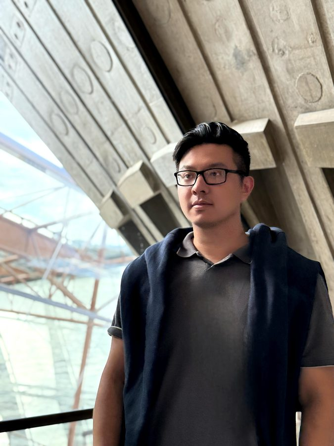
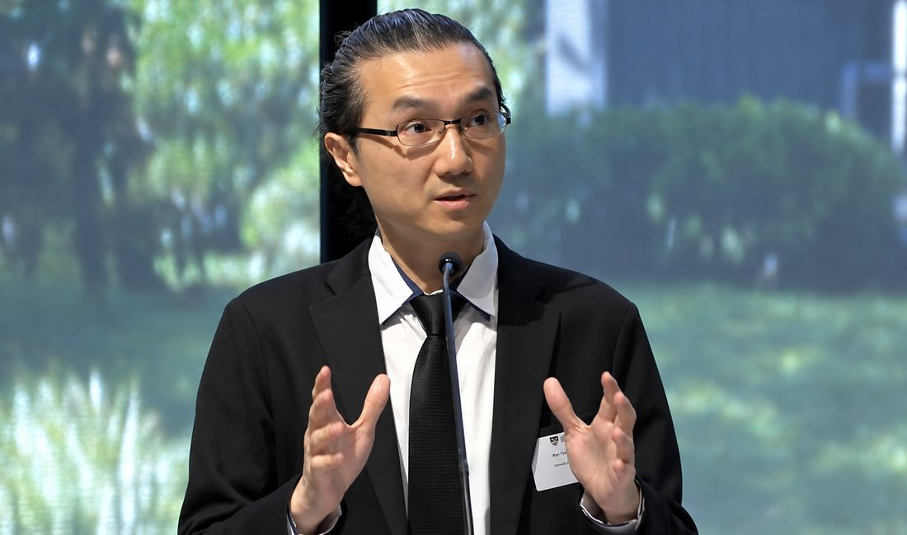
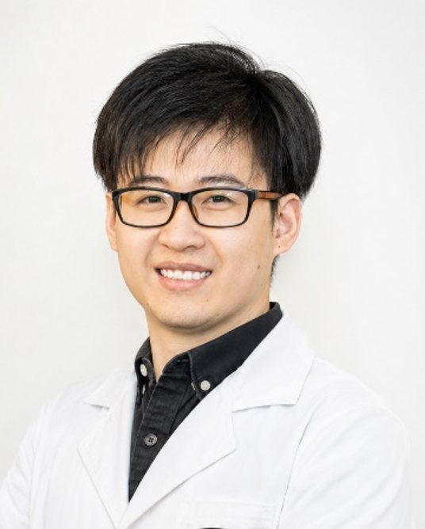

Dr Mackenzie Siyuan Zhuang
生物医学工程科学家
微流控平台工程师
即时检测设备创新者
為楚生物科技联合创始人
悉尼大学
致力于开发用于单细胞分析、即时诊断和医疗健康技术的生物医学微流控技术。
致谢Zhuang 博士的博士学位研究由澳大利亚联邦政府通过澳大利亚政府研究培训计划（RTP）奖学金资助。
為楚生物科技背后的人
我们是一群科学家和研究人员，怀着一个简单的目标：帮助人们更健康地生活。对血流和血栓的好奇心，驱使我们把严谨的研究转化为实用的工具；我们用心工作、相互协作，致力于让每个人都更健康。
生物医学工程科学家
微流控平台工程师
即时检测设备创新者
為楚生物科技联合创始人
悉尼大学
致力于开发用于单细胞分析、即时诊断和医疗健康技术的生物医学微流控技术。
致谢Zhuang 博士的博士学位研究由澳大利亚联邦政府通过澳大利亚政府研究培训计划（RTP）奖学金资助。


生物医学工程教授
悉尼大学
Ken-Tye Yong 教授是悉尼大学生物医学工程教授，也是 Light and Advanced Systems Laboratory 的创始人兼主任。他的研究涵盖生物医学工程、微流控、传感以及人工智能驱动的科学发现。他在力门控血栓（FGT）方面的工作，致力于把力学生物学认识和血流动力学作用力转化为预测模型，识别血栓起始倾向较高的空间区域，将基础理论与微流控验证及转化医学应用联系起来。

澳大利亚国家心脏基金会博士后研究员
BioFabrix 创始人
悉尼大学 · 心脏研究所（Heart Research Institute）
Yunduo (Charles) Zhao 博士是澳大利亚国家健康与医学研究委员会（NHMRC）学者，也是澳大利亚国家心脏基金会博士后研究员，任职于悉尼大学和心脏研究所。他的研究聚焦于“物理孪生”（Physical Twin）技术：把患者个体的血管重建为人源化器官芯片系统，在生理流动条件下研究血栓形成和治疗反应。他更广泛的研究涵盖血管生物力学、内皮生物学、血小板力学生物学和精准心血管医学。在学术之外，Zhao 博士创办了 BioFabrix Pty Ltd，这是一家澳大利亚衍生企业，专注于可规模化的微流控制造和患者个体化血管检测。
人工智能研究员 · 数字孪生
HemoByte 联合创始人
悉尼大学
Haimei (Helen) Zhao 博士是悉尼大学的人工智能研究员，也是 HemoByte 联合创始人。她将领导计算机科学学院的 AI for Science & Health 研究组，专注于生物医学工程人工智能、科学智能（AI for Science）和生物医学数字孪生。她的研究融合计算机视觉、多模态人工智能和计算建模，推动个性化医疗、疾病建模和临床决策。她致力于连接基础人工智能创新与临床转化，开发面向预测性、个性化和主动式医疗的新一代智能技术。
论文
Force-Gated Thrombosis (FGT): A Non-Equilibrium Mechanical Theory of Shear-Induced Blood Clot Initiation. bioRxiv, 2026. doi:10.64898/2026.05.17.725779
本平台为研究测试版。团队的研究方向并不代表本软件已具备经过校准的患者风险预测能力，也不代表其已通过临床验证。